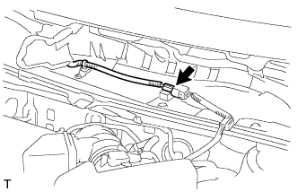
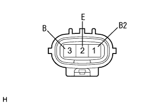

Windshield Glass Inspection |
| 1. Inspect Windshield Glass (w/ Cold Area Specification) |
 |
Disconnect the front windshield deicer connector.
 |
Using SST (Toyota electrical tester), measure the resistance between the terminals of the connector.
| Tester Connection | Condition | Standard |
|---|---|---|
| 1(B2) - 2(E) | Always | Below 1 Ω |
| 2(E) - 3(B) | Always | Below 1 Ω |